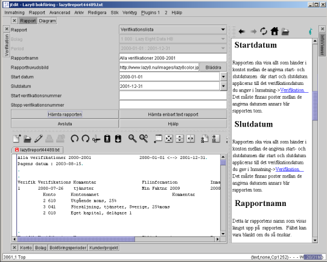

|
|
Denna beskriver hur man skapar rapporter. Nedan finns ett exempel på 'Verifikationsrapport' som skapar en lista på alla verifikationer mellan start och stoppdatumen.

Denna rapport formulär finns på längst upp i huvudfönstret. Lägg märke till att knappen 'Rapport' är vald bland alla knappar överst i huvudfönstret. Det var denna knapp jag tryckte på för att visa formuläret 'Rapport'. Sedan valde jag 'Verifikationsrapport' till denna exempel. Jag kunde ha använt vilket rapport som helst i detta exempel eftersom alla fungerar likadant.
Verifikationsrapport I exemplet ovan ser du början av rapporten i textområdet på fönstret. Denna rapport fick jag när jag tryckte på 'Hämta enbart text rapport' knappen.
I exemplet nedan kan man se den första sidan av rapporten skapade när man trycker på Knappen "Hämta rapporten". Denna är en förhandsgransknings-skärm och har sina egna menyer för utskrifter, sida inställningar och fil sparande till Excel, PDF, CSV, HTML och text format. PDF filen är det högsta kvalitet men Excel, CSV, HTML och text fil format är en mycket sämre kvalitet. Om man vill ha bra kvalitet på text format kan man trycka på 'Hämta enbart text rapport' knappen som visas i exemplet ovan.

Definition av varje fält
Rapport
Detta är en lista av alla fördefinierade och egna definierade rapporter som finns. Välj här vilken rapport du vill se.Bolag
Normalt, väljer du vilket bolag du ska arbeta med när du starta Lazy8 bokföring. Detta bolag visas här. För att byta bolag, måste du start om Lazy8 bokföring.Bokföringsperiod
Verifikationsdatumet måste hamna mellan dessa två datum, anars, godkänns det inte. För att byta bokföringsperiod, måste du start om Lazy8 bokföring.Startdatum
Rapporten ska visa allt som händer i kontot mellan de angivna start- och slutdatumen där start och slutdatum appliceras till det verifikationdatum du angav i Inmatning->Verifikation. Det måste finnas poster mellan de angivna datumen annars blir rapporten tom.
Slutdatum
Rapporten ska visa allt som händer i konton mellan de angivna start- och slutdatumen där start och slutdatum appliceras till det verifikationdatum du gav i Inmatning-> Verifikation. Det måste finnas poster mellan de angivna datumen annars blir rapporten tom.
Rapportnamn
Detta är rapportens namn som visas längst upp på rapporten. Fältet kan vara blankt om du så önskar.
Start verifikationsnummer
Rapporten ska visa allt som händer i kontot mellan de angivna start- och slutverifikationsnummer där start och slutverifikationsnummer appliceras till det verifikationsnummer du fick i Inmatning-> Verifikation. Det måste finnas poster mellan de angivna verifikationsnummer annars blir rapporten tom. Du får också lämna dessa fält tom och då får du alla verifikationsnummer
Stop verifikationsnummer
Rapporten ska visa allt som händer i kontot mellan de angivna start- och slutverifikationsnummren där start och slutverifikationsnummer appliceras till det fakturaverifikationsnummer du fick i Inmatning-> Verifikation. Det måste finnas poster mellan de angivna verifikationsnummer annars blir rapporten tom. Du får också lämna dessa fält tom och då får du alla verifikationsnummren
Hämta rapporten
Tryck på denna knapp när alla föregående fält är ifyllda. Rapporten ska visas i ett separat ordbehandlingsfönster
Hämta rapporten till en urklipp
Tryck på denna knapp när alla föregående fält är ifyllda. Rapporten ska läggas direkt i ett urklipp. Sedan, måste du klistra in det i en ordbehandlare eller ett kalkyleringsprogram. Om du klistra in det i en ordbehandlare, får du det bästa resultatet om du efter att du har klistrat in det i ordbehandlaren, markerar allt och väljer -omvandla text till tabell- i ordbehandlaren.
Exit
Lämna denna skärmHjälp
Visa en hjälpskärm i fullstorlek om denna rapport.
|
|
Copyright 2002 Lazy Eight Data HB